Usage examples and limitations
To install the package:
devtools::install_github("leonawicz/mapmate")Introduction and motivation
The mapmate package is used for map- and globe-based data animation pre-production. Specifically, mapmate functions are used to generate and save to disk a series of map graphics that make up a still image sequence, which can then be used in video editing and rendering software of the user’s choice. This package does not make simple animations directly within R, which can be done with packages like animation. mapmate is more specific to maps, hence the name, and particularly suited to 3D globe plots of the Earth.
The motivation for the package is to assist with heavy data processing and image production for large, complex data animation videos that can require a significant amount of computing resources to create. It is best suited to use on a Linux server with a significant number of CPU cores and a significant amount of RAM, but all examples presented here are simple and have no such requirements. mapmate is all about video pre-production. Still image sequences created by R are meant to be rendered into video subsequently by dedicated video editing software. It makes the most sense to leverage the power of both programs for what they are best designed for: R for data analysis and plotting and something else for high quality video rendering.
As mentioned, there are other solutions for producing animations completely from R with only implicit external software dependencies (e.g., using the rgl package or relying on ImageMagick convert). The only restriction is that you have to want to create an animation that is small and simple enough for other solutions to remain realistic options. At some point the size of data or the images or the total number of frame or some other limitation may creep in and stop you if your animation is just simply too big or complex. At that point, this package has the value of being dedicated to generating still image sequences to pass to another program. If you ever make videos which require the use of video editing software, then you will know at what point it makes sense to just make still image sequences that you can drop on your timeline to finish your video project rather than trying to force R to do the entire job itself.
Nevertheless, while the strength of R for pre-production lies in its data analysis, processing and graphing capabilities, there are some limitations to how well save_map in the mapmate package will draw certain types of maps of certain types of data sets. The biggest limitation is in attempting to draw filled in polygons on a map using an orthographic projection; the 3D Earth globe view.
Below is a series of usage examples of save_map applied to example data included in the package. The examples show how to make different maps based on the different arguments that can be passed to save_map. They also show how some of the map type options available in save_map are primarily included to reveal their current limitations in drawing maps. Points, paths and tiles tend to work well, as do contour lines for the most part, but polygons often display serious clipping issues.
This package depends heavily on ggplot2 for plotting. While it is easy enough to write a function that takes the lon/lat centroid of the visible hemisphere and returns an ordered set of lon/lat coordinates defining the circle that represents the hemisphere’s outer edge for orthographically projected data, I have not yet found a way in this context to use that circle to essentially reclip the polygons. If I could do so, then I could potentially apply the reclipping inside save_map when ortho=TRUE prior to the reprojection done by ggplot2::coord_map. But not so easily, if the data are not actually projected to the orthographic projection until passed inside coord_map. The reliance on coord_map could cripple my ability to insert a reclipping step where I need to, but I haven’t delved into it yet since my main use of the package is not for polygons.
Lastly, since these examples are simply intended to display what kind of map outputs are made given the various arguments that can be passed to save_map, the plot or image frame number/ID value never goes beyond 1 and save_map is not called iteratively in any of these examples. For code related to typical map sequence generation see the introductory vignette for examples: browseVignettes(package="mapmate") or view it here.
Setup
First some setup using the package data:
library(mapmate)
library(dplyr)
library(RColorBrewer)
pal <- rev(brewer.pal(11, "RdYlBu"))
data(annualtemps)
data(borders)
data(bathymetry)
id <- "frameID"
temps <- mutate(annualtemps, frameID = Year - min(Year) + 1) %>% filter(frameID ==
1) # subset to first frame
brdrs <- mutate(borders, frameID = 1)
bath <- mutate(bathymetry, frameID = 1)Next for the plots. Note that the aptly named save_map is not typically used for returning plot objects but rather for saving them to disk, hence why every call to save_map in this set of examples must explicitly include the non-default save.plot and return.plot arguments.
Flat world maps vs 3D Earth
Use ortho=TRUE (default) or ortho=FALSE.
save_map(temps, id = id, ortho = FALSE, col = "dodgerblue", type = "points",
save.plot = FALSE, return.plot = TRUE)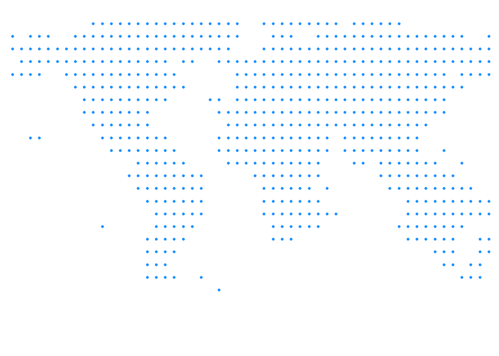
save_map(temps, id = id, col = "#FF4500", type = "points", save.plot = FALSE,
return.plot = TRUE)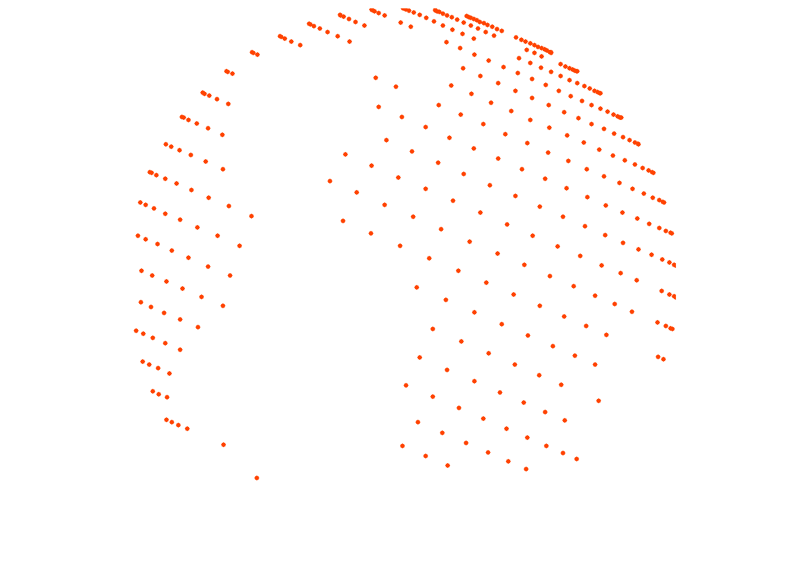
Simple points
The previous examples use point data. To confirm this works with points everywhere, depending on the resolution of the source data, here is another example using the bathymetry surface with type="points".
save_map(bath, id = id, type = "points", save.plot = FALSE, return.plot = TRUE)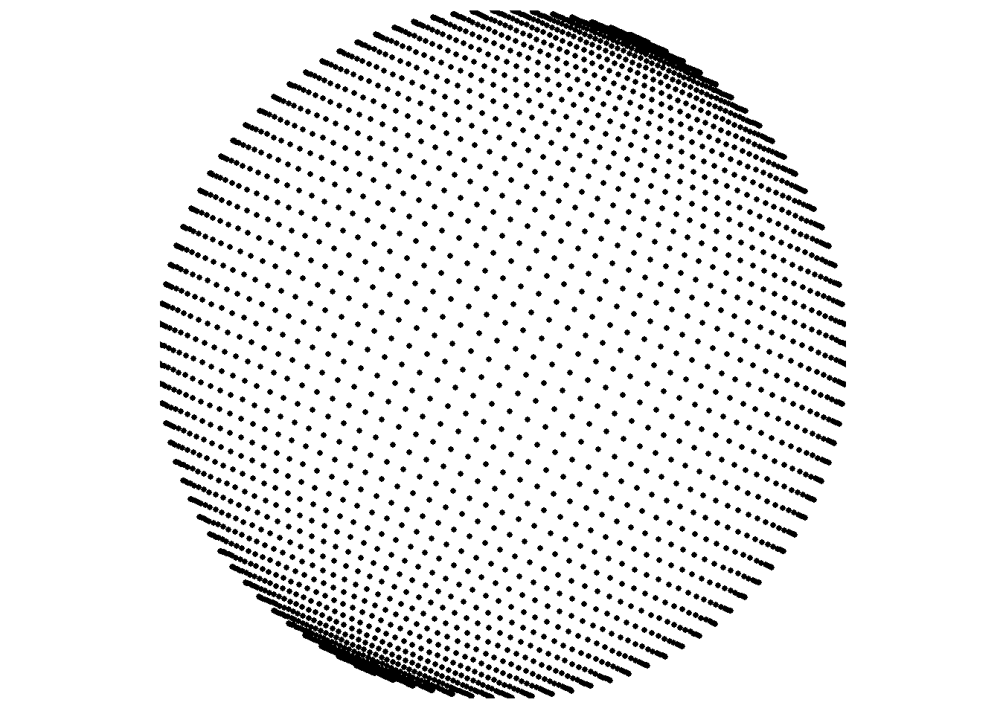
Spatial/polygon boundary lines
type="maplines" relies on ggplot2::geom_path internally, which is why it is suited to drawing ordered polygon border lines and why the original borders data frame contains the necessary additional variables for grouping and plotting order. While the prepared data frames used in this set of examples are provided by the package, typically you would generate these yourself from your data which were originally in another form such as SpatialPolygonsDataFrame or RasterLayer objects.
A common way to do this is by using ggplot2::fortify or, alternatively, duplicated functionality in the broom package. See those packages for examples or documentation. Further below I include one example “from scratch” that shows an instance of using fortify to make the transition from a SpatialPolygonsDataFrame to a “fortified” data frame that is ready to be ingested by ggplot inside save_map like the already fortified example data frames provided by mapmate.
save_map(brdrs, id = id, type = "maplines", save.plot = FALSE, return.plot = TRUE)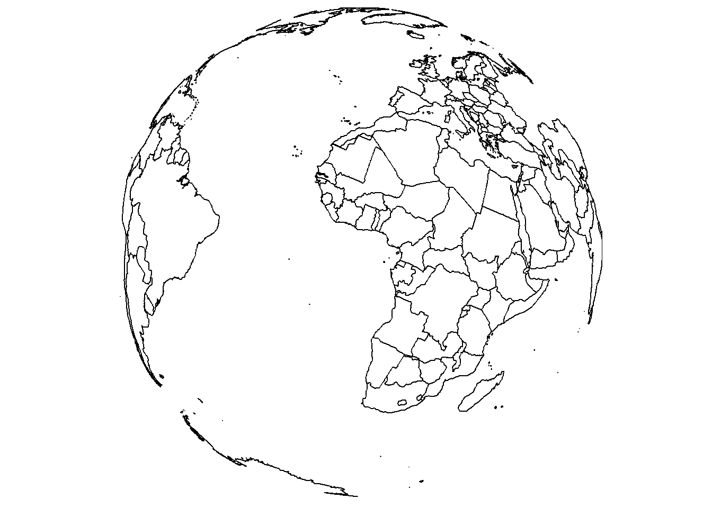
While we’re here, let’s also change the view using lon, lat, and rotation.axis.
save_map(brdrs, id = id, lon = -70, lat = 40, rotation.axis = 0, type = "maplines",
save.plot = FALSE, return.plot = TRUE)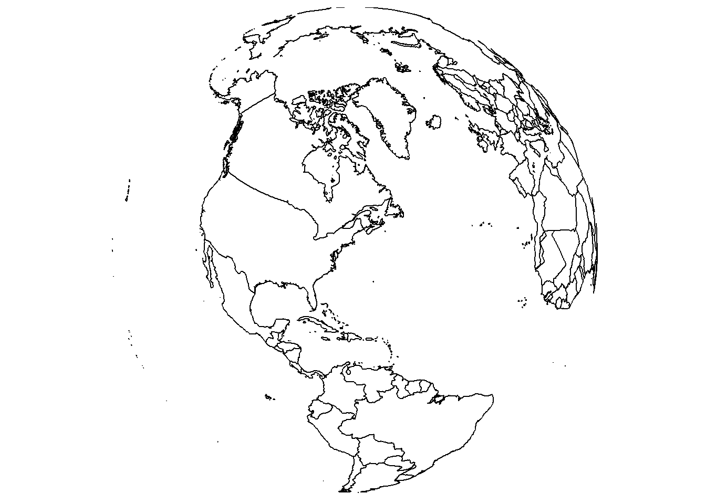
Rasterized tiles
In the previous examples there was no need to provide a third variable, a data variable. The plots are based on spatial locations only, whether points or paths. For gridded data, a z variable is needed and is specified with the z.name argument.
save_map(bath, z.name = "z", id = id, col = pal, type = "maptiles", save.plot = FALSE,
return.plot = TRUE)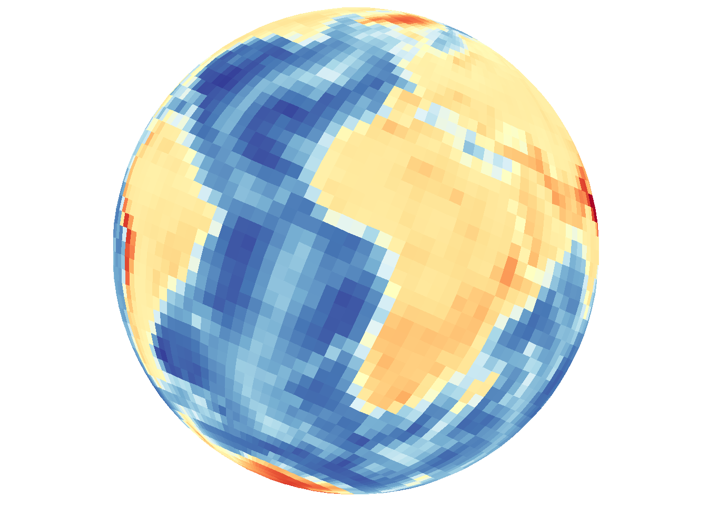
Density maps and contour lines
type="density" combines both 2D density and 3D contour mapping under a single heading for convenience and based on the default map appearance, but it is important to remember the distinction. The previous example using type="maptiles" is actually a special case and matches the plot output associated with the default arguments that are relevant to type="density".
Filled contour-style density using tiles
Default arguments include contour="none" and density.geom="tile".
save_map(bath, z.name = "z", id = id, col = pal, type = "density", save.plot = FALSE,
return.plot = TRUE)
Explicit contour lines can also be overlaid with the base map type.
save_map(bath, z.name = "z", id = id, col = pal, type = "density", contour = "overlay",
save.plot = FALSE, return.plot = TRUE)
Contour lines can also be drawn without including the base layer indicated by type.
save_map(bath, z.name = "z", id = id, col = pal, type = "density", contour = "only",
save.plot = FALSE, return.plot = TRUE)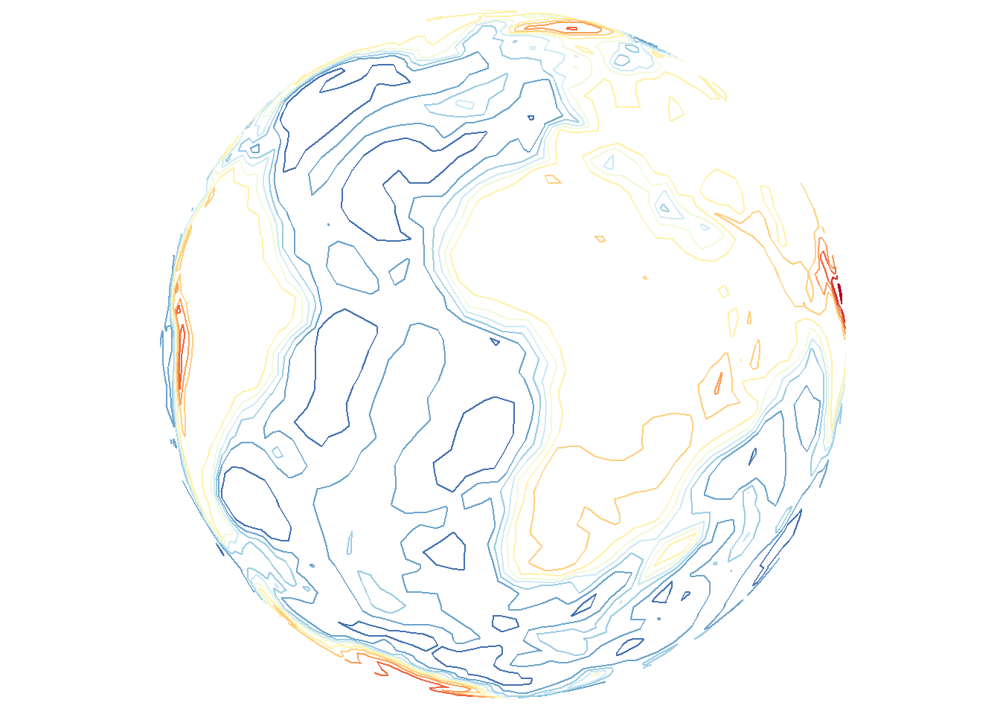
Contour lines with points
As a brief aside, these options also work for type="points". Remember that these contour lines are based on the spatial density of lon/lat coordinates, unlike the previous contour lines examples that make use of the data variable.
save_map(temps, id = id, col = "red", type = "points", contour = "overlay",
save.plot = FALSE, return.plot = TRUE)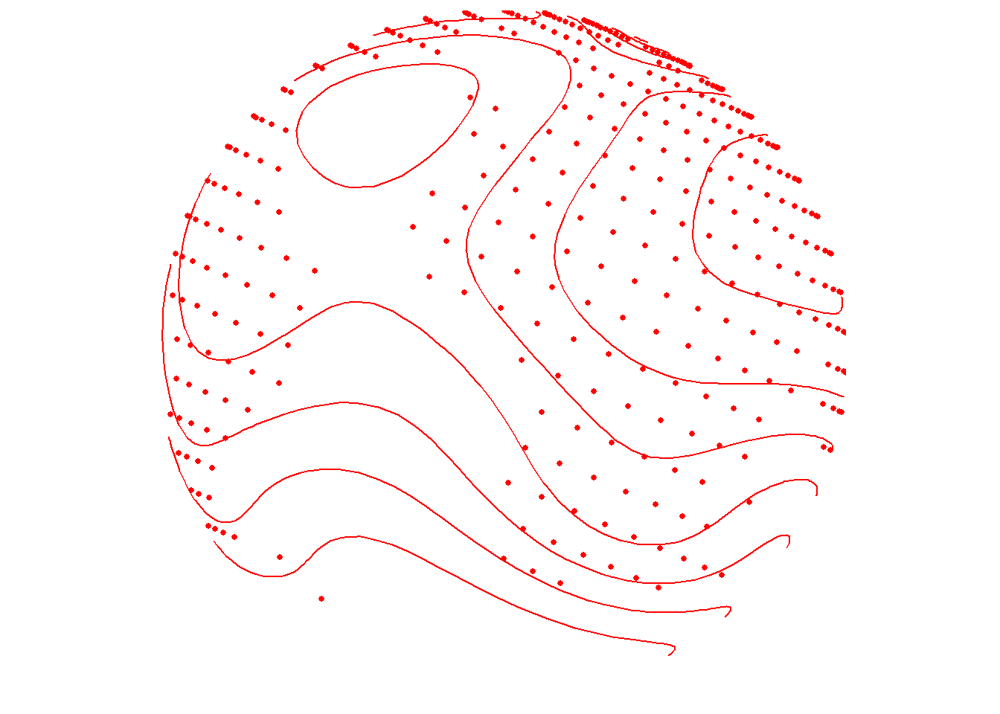
save_map(temps, id = id, col = "blue", type = "points", contour = "only", save.plot = FALSE,
return.plot = TRUE)
For type="points", the color col applies to both points and contour lines, but for type="density" col applies to the density map. Contour line overlays will remain as black lines. The exception is when contour="only", in which case col may still be a vector defining a color palette that will be applied to the contour lines in place of the underlying filled density map.
Density maps of locations (no data variable)
True density maps based on lon/lat locations rather than filled contours based on three variables can also be plotted by excluding z.name. The first call below includes z.name="z" and the second does not. As expected, these are completely different maps because they use fundamentally different data in different ways.
save_map(temps, z.name = "z", id = id, col = pal, type = "density", contour = "overlay",
save.plot = FALSE, return.plot = TRUE)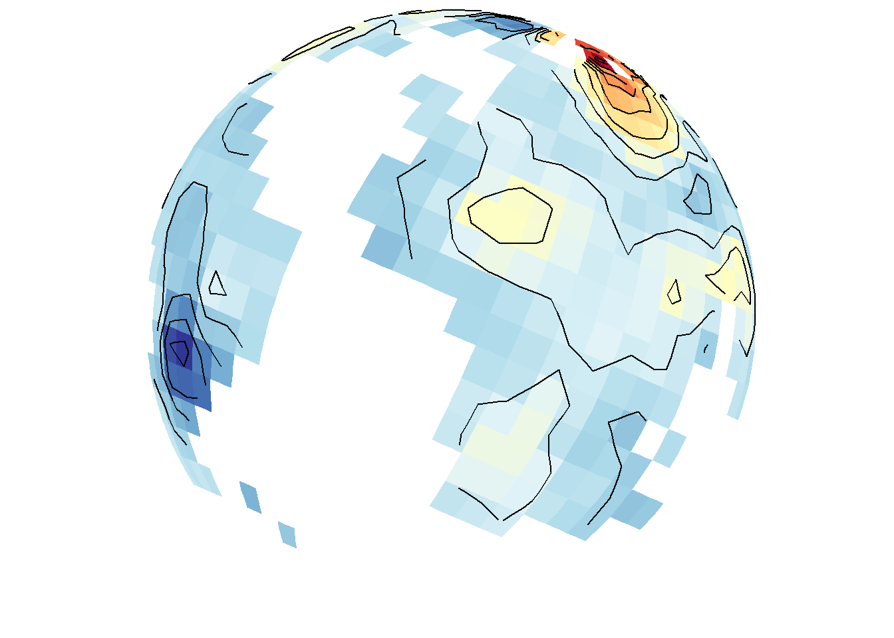
save_map(temps, id = id, col = pal, type = "density", contour = "overlay", save.plot = FALSE,
return.plot = TRUE)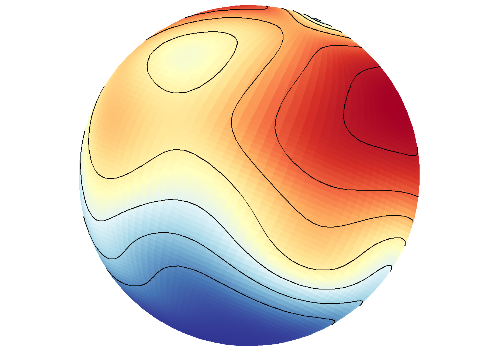
Of course, this would not be interesting to do when the data frame contains gridded data at all lon/lat locations on the world grid like in bathymetry.
save_map(bath, id = id, lon = -70, lat = 50, col = pal, type = "density", contour = "overlay",
save.plot = FALSE, return.plot = TRUE)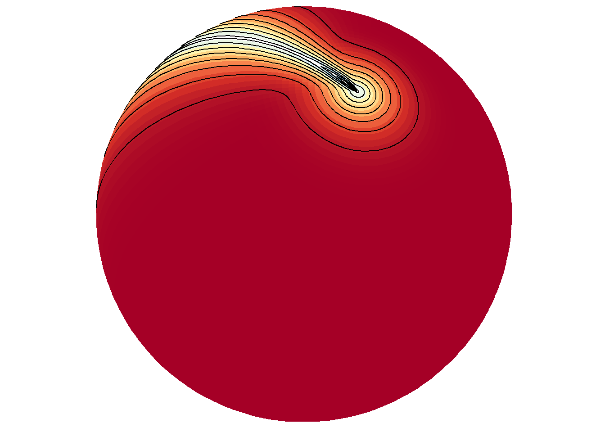
Tiles vs. polygons
Relying internally on ggplot2::geom_polygon inside save_map can be much faster than ggplot::geom_tile to process the data and make maps. This is an important consideration for generating long sequences of many high-resolution maps. However, the trade off is that polygons may be drawn very poorly with much clipping, the degree of the problem depending on the given data. Of course, if tiles are drawn at an extremely coarse resolution based on the input data, they still won’t look good, and also won’t take as long to draw. It is what you decide to make of it with the data you choose to map. The below examples compare the use of tiles to polygons.
save_map(temps, z.name = "z", id = id, col = pal, type = "density", contour = "overlay",
density.geom = "tile", save.plot = FALSE, return.plot = TRUE)
save_map(temps, z.name = "z", id = id, col = pal, type = "density", contour = "overlay",
density.geom = "polygon", save.plot = FALSE, return.plot = TRUE)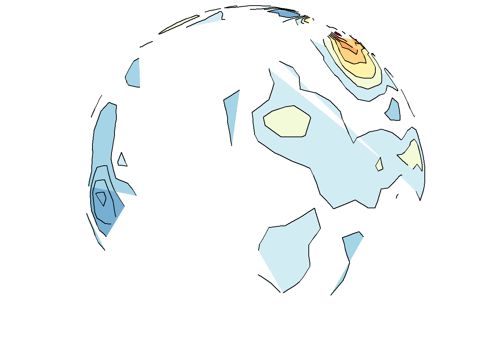
save_map(bath, z.name = "z", id = id, col = pal, type = "density", contour = "overlay",
density.geom = "tile", save.plot = FALSE, return.plot = TRUE)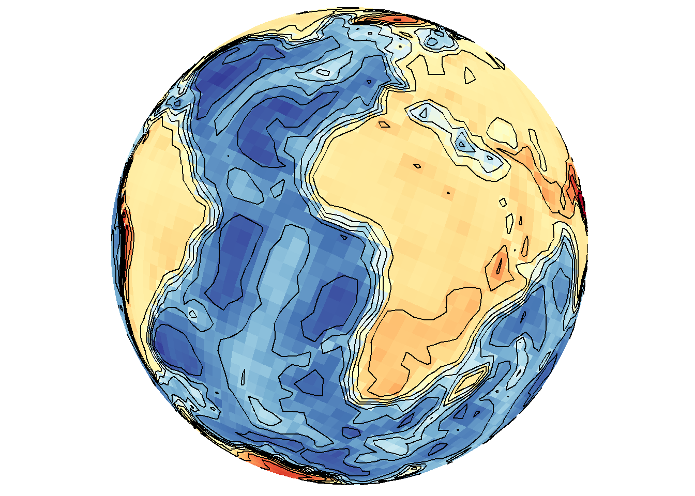
save_map(bath, z.name = "z", id = id, col = pal, type = "density", contour = "overlay",
density.geom = "polygon", save.plot = FALSE, return.plot = TRUE)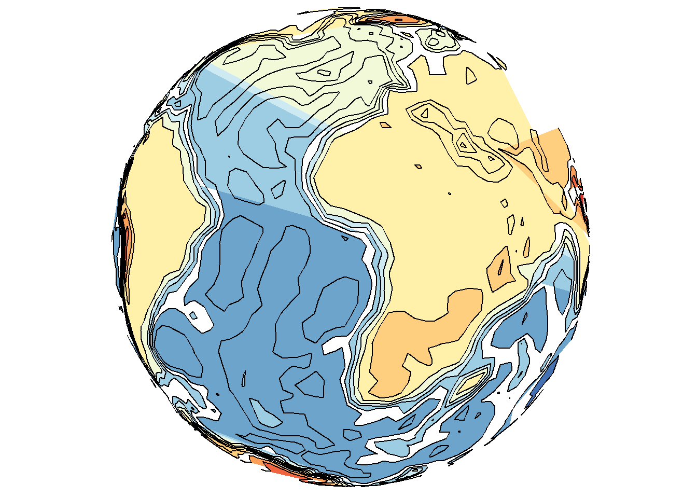
Tiles may also interpolate where possible, but not extrapolate, which may not be desired behavior for a map; e.g., when drawing the continents and interpolating between them but still excluding the poles. It can lead to confusion about what is the underlying data. Yet polygons may still perform much worse, even in flat maps, as shown below.
save_map(temps, id = id, col = pal, type = "density", contour = "overlay", density.geom = "tile",
save.plot = FALSE, return.plot = TRUE)
save_map(temps, id = id, col = pal, type = "density", contour = "overlay", density.geom = "polygon",
save.plot = FALSE, return.plot = TRUE)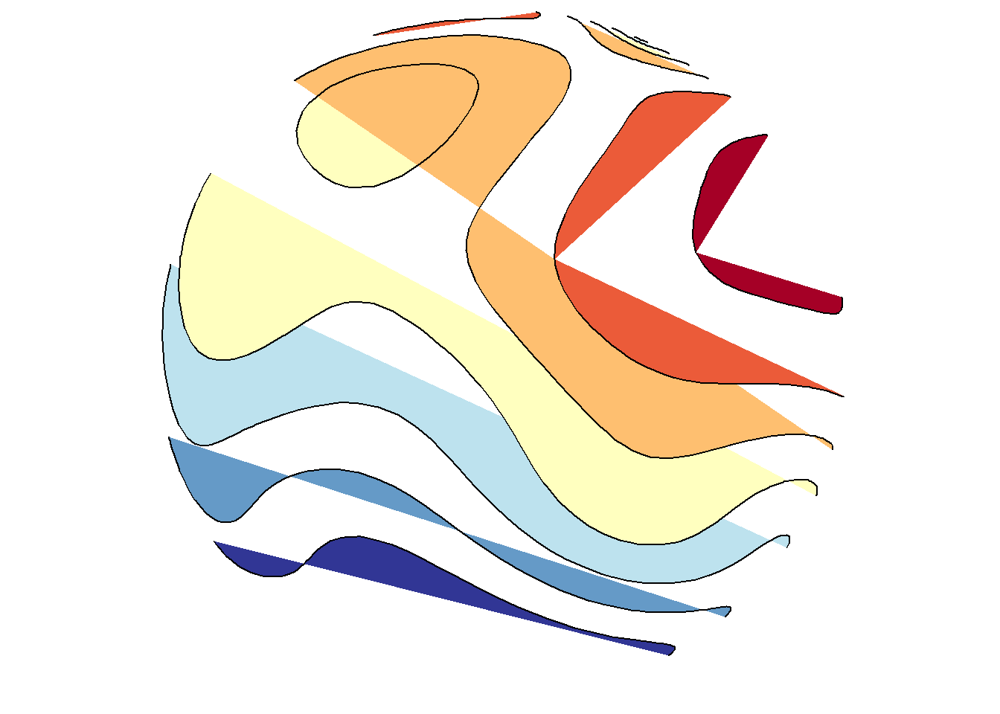
save_map(temps, id = id, col = pal, type = "density", ortho = FALSE, contour = "overlay",
density.geom = "tile", save.plot = FALSE, return.plot = TRUE)
save_map(temps, id = id, col = pal, type = "density", ortho = FALSE, contour = "overlay",
density.geom = "polygon", save.plot = FALSE, return.plot = TRUE)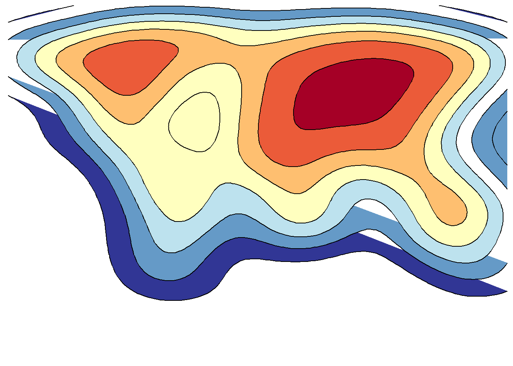
An example from scratch
This is also apparent when using the simpler options type="polygons" and type="maptiles". The former relies on a SpatialPolygonsDataFrame object as the data source and the later on a RasterLayer. Here examples of each are compared and they are prepped from scratch using the appropriate class objects. Remember that these two map type options are essentially special cases of the density type option.
# polygons
library(rworldmap)
library(rworldxtra) # required for 'high' resolution map
library(maptools) # required for fortify to work
# also recommend installing rgeos
spdf <- joinCountryData2Map(countryExData, mapResolution = "high")
spdf@data$id <- rownames(spdf@data)
bio <- ggplot2::fortify(spdf, region = "id") %>% left_join(subset(spdf@data,
select = c(id, BIODIVERSITY)), by = "id") %>% mutate(frameID = 1) %>% rename(lon = long)
# raster layer
library(raster)
proj4 <- "+proj=longlat +datum=WGS84 +no_defs +ellps=WGS84 +to wgs84=0,0,0"
z <- "BIODIVERSITY"
# 1-degree resolution, still somewhat coarse
r <- raster(extent(-180, 180, -90, 90), nrow = 180, ncol = 360, proj4)
bio2 <- rasterize(spdf, r, field = z) %>% rasterToPoints %>% tbl_df() %>% setNames(c("lon",
"lat", z)) %>% mutate(frameID = 1)
clrs <- c("royalblue", "purple", "orange", "yellow")
save_map(bio, z.name = z, id = id, lon = -10, lat = 20, col = pal, type = "polygons",
save.plot = FALSE, return.plot = TRUE)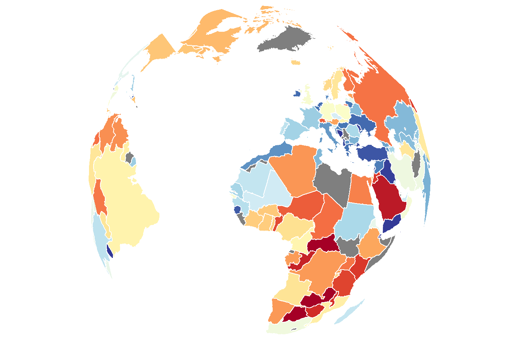
save_map(bio2, z.name = z, id = id, lon = -10, lat = 20, col = pal, type = "maptiles",
save.plot = FALSE, return.plot = TRUE)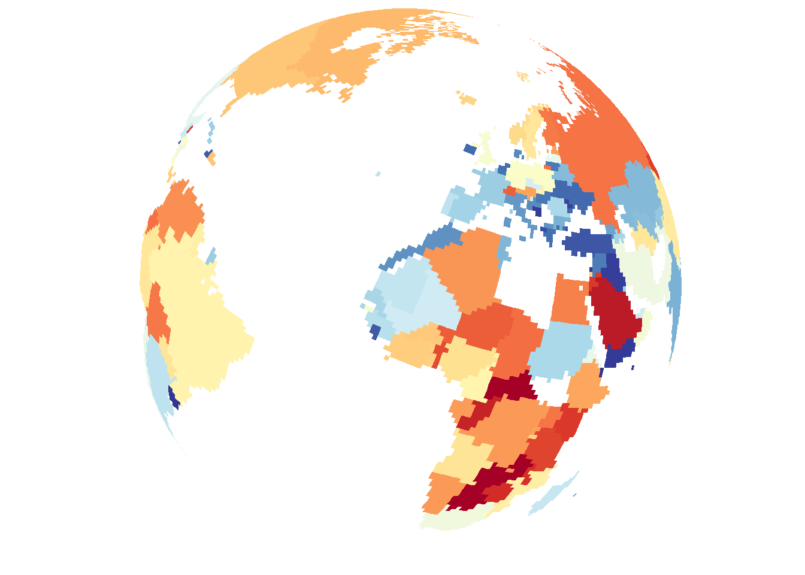
In conclusion, there are a variety of methods available to draw different types of data on the globe from any arbitrary perspective. Flat maps are also an option but this is not as interesting so it is not focused on. The primary uses of save_map among what is shown here are for plotting points, polygon borders and tiles. The rest are interesting options and can work well enough for specific use cases but are included here mainly to highlight their current limitations.
The one option not covered here (I will add this in a future update) is the type="network" option, which is used for plotting a time series of maps/globes showing moving great circle arcs. This is my personal favorite use case, but it is also the most complex so I am yet to fold code for that into this package and incorporate great circle arc network examples into the various help documentation, vignettes and tutorials. Something more to look forward to.